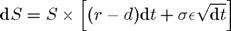
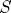
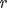
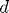
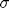
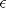
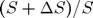
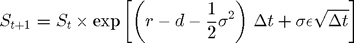
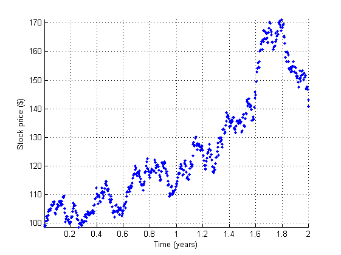
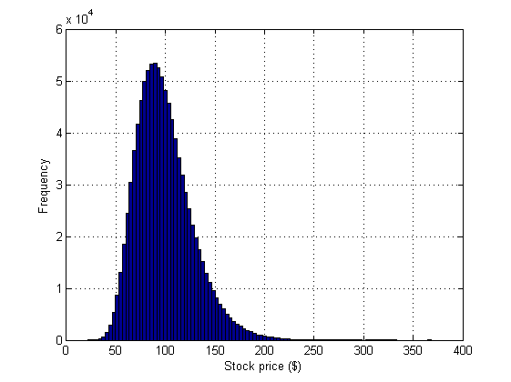

Contents
function gpu_optionpricing
Exotic Option Pricing on a GPU using a Monte-Carlo Method
This demo provides some examples of financial option pricing using Monte-Carlo methods on the GPU. Three simple types of exotic option have been chosen as examples, but more complex options can be priced in similar ways.
This demo uses long-running kernels, so cannot run if kernel execution on the GPU can time-out. A time-out is usually only active if the selected GPU is also driving a display. dev = gpuDevice(); if dev.KernelExecutionTimeout warning( 'pctdemo:gpuoptionpricing:KernelTimeout', ... ['This demo cannot run if kernel execution on the GPU ' ... 'can time-out.'] ); return; end
Stock Price Evolution
We assume that prices evolve according to a log-normal distribution related to the risk-free interest rate, the dividend yield (if any), and the volatility in the market. All of these quantities are assumed fixed over the lifetime of the option. This gives the following stochastic differential equation for the price:

where  is the stock price,  is the risk-free interest rate,  is the stock's annual dividend yield,  is the volatility of the price and  represents a Gaussian white-noise process. Assuming that  is log-normally distributed, this can be discretized to:

As an example let's use $100 of stock that yields a 1% dividend each year. The central government interest rate is assumed to be 0.5%. We examine a two-year time window sampled roughly daily. The market volatility is assumed to be 20% per annum.
stockPrice = 100; % Stock price starts at $100. dividend = 0.01; % 1% annual dividend yield. riskFreeRate = 0.005; % 0.5 percent. timeToExpiry = 2; % Lifetime of the option in years. sampleRate = 1/250; % Assume 250 working days per year. volatility = 0.20; % 20% volatility.
We reset the random number generators to ensure repeatable results.
seed = 1234; rng( seed ); % Reset the CPU random number generator. parallel.gpu.rng( seed ); % Reset the GPU random number generator.
We can now loop over time to simulate the path of the stock price:
price = stockPrice; time = 0; hold on; while time < timeToExpiry time = time + sampleRate; drift = (riskFreeRate - dividend - volatility*volatility/2)*sampleRate; perturbation = volatility*sqrt( sampleRate )*randn(); price = price*exp(drift + perturbation); plot( time, price, '.' ); end axis tight; grid on; xlabel( 'Time (years)' ); ylabel( 'Stock price ($)' );
Running on the GPU
To run stock price simulations on the GPU we first need to put the simulation loop inside a function:
function finalStockPrice = simulateStockPrice(S,r,d,v,T,dT) t = 0; while t < T t = t + dT; drift = (r - d - v*v/2)*dT; perturbation = v*sqrt( dT )*randn(); S = S*exp(drift + perturbation); end finalStockPrice = S; end
We can then call it thousands of times using arrayfun. To ensure the calculations happen on the GPU we make the input prices a GPU vector with one element per simulation. To accurately measure the calculation time on the GPU we must use wait to ensure that the GPU has finished all operations before calling toc. This is only required for timing purposes.
% Create the input data. N = 1000000; startStockPrices = stockPrice*parallel.gpu.GPUArray.ones(N,1); timer = tic; % Run the simulations. finalStockPrices = arrayfun( @simulateStockPrice, ... startStockPrices, riskFreeRate, dividend, volatility, ... timeToExpiry, sampleRate ); meanFinalPrice = mean(finalStockPrices); % Wait for the GPU to finish and show the results. wait( gpuDevice ); timeTaken = toc( timer ); fprintf( 'Calculated average price of $%1.4f in %1.3f secs.\n', ... meanFinalPrice, timeTaken ); clf; hist( finalStockPrices, 100 ); xlabel( 'Stock price ($)' ) ylabel( 'Frequency' ) grid on;
Calculated average price of $98.9563 in 1.498 secs.
Pricing an Asian Option
As an example, let's use a European Asian Option based on the arithmetic mean of the price of the stock during the lifetime of the option. We can calculate the mean price by accumulating the price during the simulation. For a call option, the option is exercised if the average price is above the strike, and the payout is the difference between the two:
function optionPrice = asianCallOption(S,r,d,v,x,T,dT) t = 0; cumulativePrice = 0; while t < T t = t + dT; drift = (r - d - v*v/2)*dT; perturbation = v*sqrt( dT )*randn(); S = S*exp(drift + perturbation); cumulativePrice = cumulativePrice + S; end numSteps = (T/dT); meanPrice = cumulativePrice / numSteps; % Express the final price in today's money. optionPrice = exp(-r*T) * max(0, meanPrice - x); end
Again we use the GPU to run thousands of simulation paths using arrayfun. Each simulation path gives an independent estimate of the option price, and we therefore take the mean as our result.
strike = 95; % Strike price for the option ($). timer = tic; optionPrices = arrayfun( @asianCallOption, ... startStockPrices, riskFreeRate, dividend, volatility, strike, ... timeToExpiry, sampleRate ); meanOptionPrice = mean(optionPrices); % Wait for the GPU to finish and show the results. wait( gpuDevice ); timeTaken = toc( timer ); fprintf( 'Calculated average price of $%1.4f in %1.3f secs.\n', ... meanOptionPrice, timeTaken );
Calculated average price of $8.7247 in 1.636 secs.
Pricing a Lookback Option
For this example we use a European-style lookback option whose payout is the difference between the minimum stock price and the final stock price over the lifetime of the option.
function optionPrice = euroLookbackCallOption(S,r,d,v,T,dT) t = 0; minPrice = S; while t < T t = t + dT; drift = (r - d - v*v/2)*dT; perturbation = v*sqrt( dT )*randn(); S = S*exp(drift + perturbation); if S<minPrice minPrice = S; end end % Express the final price in today's money. optionPrice = exp(-r*T) * max(0, S - minPrice); end
Note that in this case the strike price for the option is the minimum stock price. Because the final stock price is always greater than or equal to the minimum, the option is always exercised and is not really "optional".
timer = tic; optionPrices = arrayfun( @euroLookbackCallOption, ... startStockPrices, riskFreeRate, dividend, volatility, ... timeToExpiry, sampleRate ); meanOptionPrice = mean(optionPrices); % Wait for the GPU to finish and show the results. wait( gpuDevice ); timeTaken = toc( timer ); fprintf( 'Calculated average price of $%1.4f in %1.3f secs.\n', ... meanOptionPrice, timeTaken );
Calculated average price of $19.2692 in 1.635 secs.
Pricing a Barrier Option
This final example uses an "up and out" barrier option which becomes invalid if the stock price ever reaches the barrier level. If the stock price stays below the barrier level then the final stock price is used in a normal European call option calculation.
function optionPrice = upAndOutCallOption(S,r,d,v,x,b,T,dT) t = 0; while (t < T) && (S < b) t = t + dT; drift = (r - d - v*v/2)*dT; perturbation = v*sqrt( dT )*randn(); S = S*exp(drift + perturbation); end if S<b % Within barrier, so price as for a European option. optionPrice = exp(-r*T) * max(0, S - x); else % Hit the barrier, so the option is withdrawn. optionPrice = 0; end end
Note that we must now supply both a strike price for the option and the barrier price at which it becomes invalid:
strike = 95; % Strike price for the option ($). barrier = 150; % Barrier price for the option ($). timer = tic; optionPrices = arrayfun( @upAndOutCallOption, ... startStockPrices, riskFreeRate, dividend, volatility, ... strike, barrier, ... timeToExpiry, sampleRate ); meanOptionPrice = mean(optionPrices); % Wait for the GPU to finish and show the results. wait( gpuDevice ); timeTaken = toc( timer ); fprintf( 'Calculated average price of $%1.4f in %1.3f secs.\n', ... meanOptionPrice, timeTaken );
Calculated average price of $6.8285 in 1.540 secs.
end